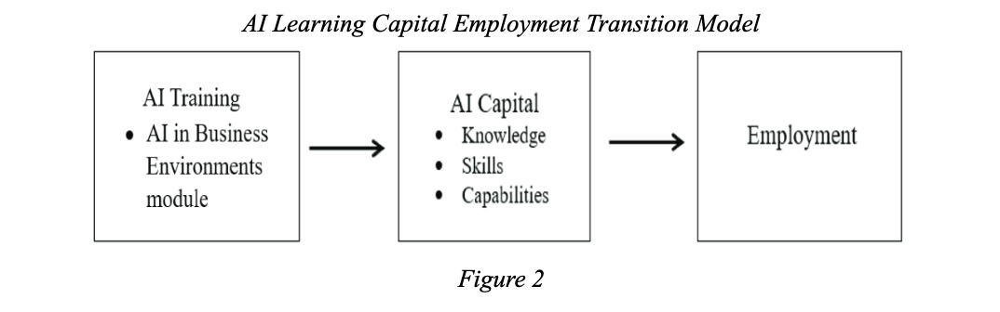

Artificial intelligence, also known as AI, has quickly reshaped the landscape of higher education, influencing how students learn, think, and prepare for future employment. Universities now utilize AI-based tools, from adaptive tutoring systems and chatbots to full AI literacy modules. Their goal is not only to improve efficiency but also to create what economist Nick Drydakis calls “AI capital”, which is a students' knowledge, skillset, and ability to use AI effectively. Research has also shown that AI literacy and structured AI education can boost academic outcomes and employability (Drydakis, 2025). On the other hand however, some scholars argue that excessive use of AI can weaken students' critical thinking and emotional well-being (Klimova & Pikhart, 2025). This paper is a literature review that aims to examine how structured AI intervention in higher education influences academic performance and critical thinking. It focuses on the role of AI capital in improving performance, the influence of AI-based tutoring and chatbot systems on learning and critical thinking, and the challenges and equity concerns that come with the integration of AI into higher education systems.
Drydakis's study, The Formation of AI Capital in Higher Education, provides one of the most direct evaluations of AI instruction in universities. In an experiment with non-STEM students at an English university, the 12-week process sought to improve AI capital of students by teaching them algorithmic reasoning, data modeling, and responsible AI use. The results were evident, as Dreydakis found that “Empirical evidence establishes significant positive relationships between AI literacy, AI usage, AI learning outcomes, and academic performance” (Drydakis, 2025). Students who developed higher AI capital achieved stronger academic results and higher post-graduation employment rates. These findings suggest that structured AI education can meaningfully reshape students' academic trajectories and workforce readiness.
Building on these findings, the figure below visually reinforces Drydakis's conclusions by illustrating the clear pathway from AI training to improved employment outcomes. The diagram outlines a progression beginning with AI instruction which can be coursework in algorithmic thinking, data handling, and ethical AI practices which directly increases students AI capital. As the figure demonstrates, this strengthened AI capital then serves as a crucial intermediary step that enhances both academic performance and job readiness. Ultimately, the model highlights that investment in AI education does not simply improve classroom outcomes but rather has a measurable impact on students' long-term career prospects, underscoring Drydakis's argument that AI literacy is becoming an essential component of employability in a rapidly evolving labor market.

In addition to employment rates itself, it was found that six months after finishing the course, “students in employment score significantly higher on the AI Capital of Students scale... than those who are unemployed” (Drydakis, 2025). Despite all this, Drydakis also went through some disparities. Male, white, and mathematically stronger students benefited the most, suggesting that AI modules may reinforce existing inequalities. Drydakis supports this by saying that “students with more frequent AI usage and more positive attitudes towards AI, often associated with higher socio-economic status and digital access, were more likely to develop strong AI self-efficacy” (Drydakis, 2025). This finding makes it pertinent for effective AI education to be inclusive for students from diverse academic backgrounds. More importantly, Drydakis argues that real AI capital involves not just knowing how algorithms operate but “why and when to deploy AI, which connects to the aspect of critical thinking.